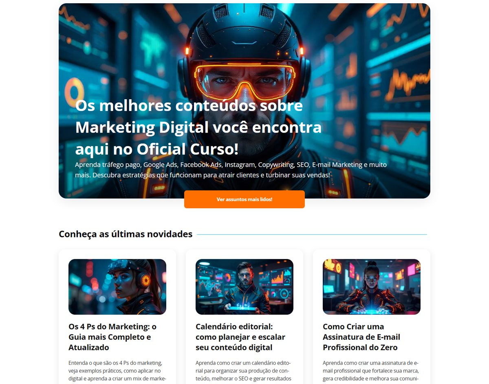
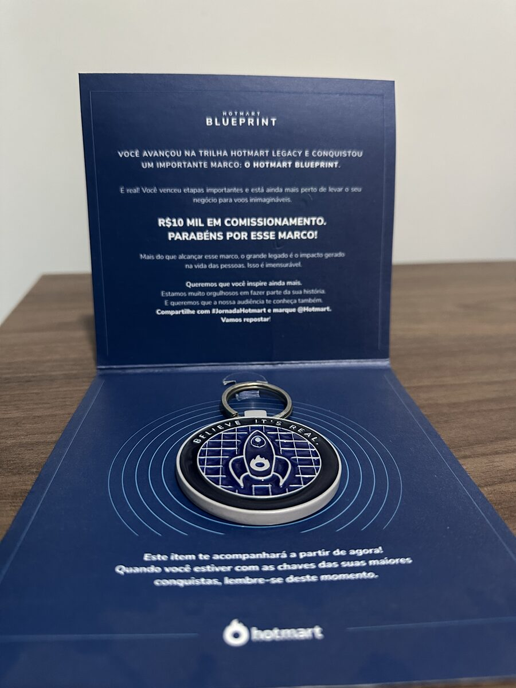

O detalhe mostra o problema.
A gráfica me ensinou a lidar com prazo curto e exigência alta. O suporte me mostrou que problema real aparece quando a gente escuta quem usa, compra ou atende.
Menos discurso. Mais resultado.
Conecto marketing, vendas, produto, redes sociais e sucesso do cliente para encontrar o ponto que segura o resultado e transformar isso em ação prática.
Antes de anunciar, postar ou mudar qualquer coisa, eu olho o caminho inteiro. O que a pessoa vê, entende, clica, pergunta, compara e compra.
Às vezes o gargalo está no anúncio. Muitas vezes está na oferta, na página, no atendimento, no produto ou no jeito que a solução foi explicada.
Meu trabalho começa nesse ponto. Primeiro eu encontro o que trava. Depois eu coloco a solução de pé.
Sobre mim
Passei por gráfica, suporte, produto, marketing, vendas e experiência do cliente. Essa mistura me tirou de uma caixa e me fez enxergar uma coisa simples. Uma decisão errada em uma ponta cria retrabalho em todo o resto.
Hoje atuo como supervisor de marketing, vendas e sucesso do cliente. Faço gestão de redes sociais, acompanho demandas, lidero pessoas e também entro na execução quando o problema pede protótipo, página, campanha, roteiro, análise ou ajuste de processo.
Mas eu não me resumo ao cargo. O crachá mostra onde estou. A entrega mostra o tamanho da responsabilidade. Meu foco é ajudar a empresa a crescer, abrir caminho para novas oportunidades e fazer as áreas trabalharem com menos ruído.
Também participei da criação e modernização de identidades visuais de marcas e produtos digitais dentro da empresa. Fiz logos, padrões de cores, layouts de aplicativos e ajustes de interface pensando no que o cliente percebe antes mesmo de falar com alguém.
Cada detalhe precisou respeitar a história da empresa e, ao mesmo tempo, deixar os produtos mais atuais, confiáveis e preparados para competir melhor.
A gráfica me ensinou a lidar com prazo curto e exigência alta. O suporte me mostrou que problema real aparece quando a gente escuta quem usa, compra ou atende.
Logo, identidade, tela, página, roteiro e conteúdo precisam conduzir a decisão. Se a pessoa se perde no caminho, o trabalho ainda não terminou.
Campanha, funil, venda, atendimento e dados não podem andar soltos. Resultado melhora quando cada parte reforça a mesma direção.
Como penso na solução Não me prendo à ferramenta. Me prendo ao problema que precisa ser resolvido.
Jeito de trabalhar
A maior parte do que sei aprendi fazendo. Testando, errando, validando e insistindo até funcionar.
Quando algo não funciona, meu primeiro impulso não é culpar a ferramenta. É descobrir o que ainda não foi visto sobre o problema.
Não gosto de entregar pela metade. Quando algo sai com meu nome, precisa estar bem feito ou eu preciso saber exatamente o que impediu isso.
É fácil dizer o que todo mundo quer ouvir. Difícil é apontar o que precisa mudar. Eu prefiro o caminho que resolve.
Não tenho apego a ferramenta. Tenho apego ao que funciona. Quando uma solução deixa de resolver, eu troco sem drama.
O que eu sei fazer
Ferramenta sozinha não sustenta resultado. O que importa é saber quando usar, onde aplicar, como medir e quando corrigir.
Google Ads, Meta Ads, tráfego pago, remarketing, criativos, funis, ROI, ROAS, CPL, CPA, CTR e campanhas orientadas por venda, não por volume bonito.
WordPress, Elementor, landing pages, hospedagem, PageSpeed, SEO técnico, Search Console, acessibilidade e páginas feitas para conduzir a decisão.
Photoshop, Illustrator, CorelDRAW, Canva, Figma, criativos, carrosséis, thumbnails, materiais comerciais, logos, rebranding e sistemas visuais.
Premiere, After Effects, CapCut, Reels, vídeos para anúncios, roteiros comerciais, ganchos, storyboards e conteúdo pensado para prender atenção.
Figma, protótipos de app, telas de sistema, dashboards, wireframes, UI, UX, fluxos de navegação e redução de atrito no uso.
Roteiros de vendas, scripts comerciais, objeções, funil de marketing, funil comercial, follow-up e recuperação de leads que já demonstraram interesse.
RD Station, Blip, robôs, automações, e-mail, segmentação, régua de relacionamento, NPS e fluxos de atendimento.
Google Analytics 4, Google Tag Manager, Search Console, Sheets, pixels, rastreamento, análise de oferta, gargalos e relatórios de performance.
Meu trabalho é fazer as áreas conversarem melhor, tirar demandas do papel e transformar problema em ação prática. Quando precisa, eu organizo, crio, ajusto, cobro, testo e executo.
Projeto próprio
Criei o OficialCurso como um projeto próprio para testar marketing digital na prática, sem depender apenas de teoria ou opinião.
Ali eu aplico SEO, estrutura de páginas, copy, performance, experiência do usuário e análise de comportamento. Antes de defender uma estratégia, eu testo.

Marcos
Um marco mostra onde aprendi. O outro mostra o que coloquei de pé por conta própria. Os dois reforçam a mesma lição. Resultado bom não nasce de discurso. Nasce de prática, contexto e constância.

A Prosistemas faz parte da minha formação profissional. Foi dentro da empresa que aprendi, na prática, grande parte do que aplico hoje em marketing, produto, vendas, atendimento e gestão.
Cada fase me colocou perto de um tipo diferente de problema. Primeiro veio a execução. Depois veio a leitura do negócio. Com o tempo, passei a entender melhor como uma decisão em uma área afeta todo o restante da operação.
Tenho muita admiração pela visão do Luis E. e pela história que ele construiu com sua família. Uma empresa que nasceu em uma cidade pequena, cresceu com trabalho sério e se tornou referência nacional.
Essa história abriu portas para muitas pessoas. Eu sou uma delas. E continuo vendo a empresa como um lugar onde ainda existe muito para construir, melhorar e entregar.
Também sou grato à Ana L., por ter me indicado para uma oportunidade que mudou meu caminho profissional e me colocou dentro dessa trajetória.
Esse quadro marca os 10 anos reconhecidos em 27 de maio de 2023. Para mim, ele representa gratidão, responsabilidade e compromisso com o que ainda está sendo construído.

Sou curioso por natureza e só acredito de verdade no que consigo testar, validar e medir. Para mim, o não sei nunca foi uma trava. É só uma etapa antes de aprender.
Lancei um produto digital como teste e acabei me surpreendendo com o resultado. Em duas semanas, alcancei o marco dos primeiros R$ 10 mil recebidos em comissão.
Esse projeto validou, na prática, muito do que eu já vinha estudando e aplicando. Anúncios, copy, persuasão, gestão de tráfego, design, criação de página do zero, otimização e leitura de dados.
Para mim, esse marco não representa atalho. Representa teste real, execução e resultado. Foi uma forma concreta de medir onde eu estava e o quanto esse repertório já conseguia entregar fora do ambiente tradicional.
Tenho gratidão real pela Prosistemas, pelas pessoas que fazem parte dessa caminhada e pelas oportunidades que continuam me desafiando. O que compartilho aqui nasce da prática diária, de testes reais e da vontade de fazer melhor dentro e fora da operação.
Prioridades
O caminho muda conforme o problema. A lógica não. Ler o cenário, escolher a alavanca, construir rápido e corrigir sem apego ao que parecia certo.
Oferta, público, canais, atendimento, produto, dados e operação.
O ponto com maior chance de destravar o cenário agora.
Campanhas, telas, scripts, páginas, fluxos, materiais e processos.
Testar, aprender, corrigir e continuar com base no que aconteceu de verdade.
Conteúdo
No meu conteúdo, mostro o que normalmente fica nos bastidores. Decisões, testes, ajustes, erros, aprendizados e caminhos usados para transformar esforço em algo que funciona melhor. É para quem gosta de marketing, vendas, produto e execução sem enrolação.
Bastidores, aprendizados e ideias que nascem da prática.
Seguir no InstagramGuias e artigos para aprender marketing digital na prática.
Conhecer o OficialCursoPróximo passo
Compartilho o que aprendo na prática conectando marketing, vendas, produto, conteúdo, SEO, atendimento e execução. Não é teoria solta. É problema real, teste, ajuste e resultado aplicado no dia a dia.
Se essa visão faz sentido para você, me acompanhe no Instagram ou conheça o OficialCurso, onde organizo parte desse repertório em artigos e guias.